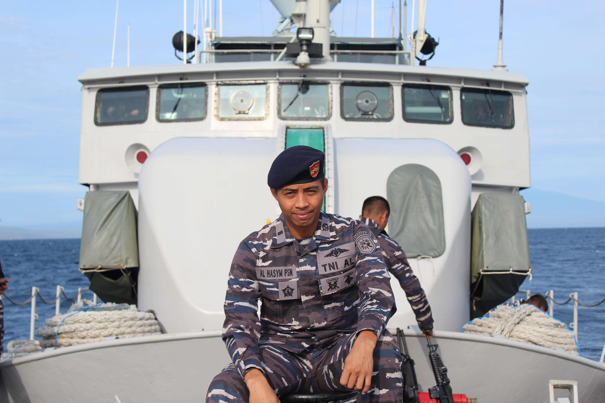
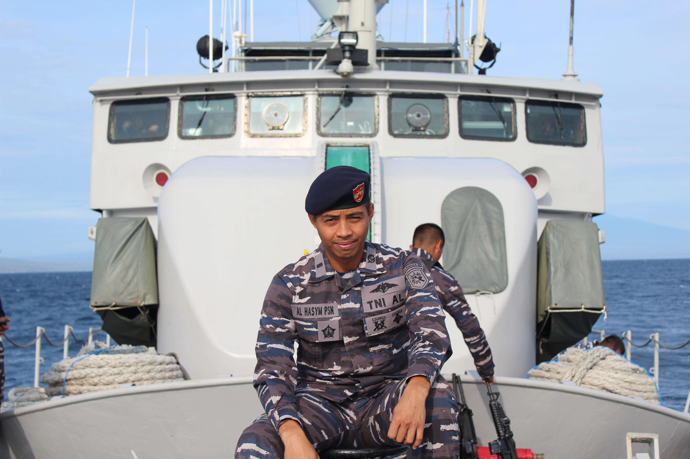

IDN Navy | Head of the Detection and Communications Division
I am known as "Hasym" to my friends and colleagues. As a dedicated public servant, I bring strong communication skills, a proven ability to work effectively in teams or independently, and a commitment to delivering high-quality results consistently. I am a lifelong learner, always seeking opportunities to develop my skills and stay up-to-date with the latest trends and technologies. My particular interest lies in Informatics, which I believe can enhance my professional competencies, inform strategic decision-making, and drive organizational success while maintaining a steadfast commitment to quality.
 
